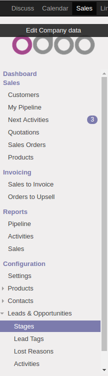
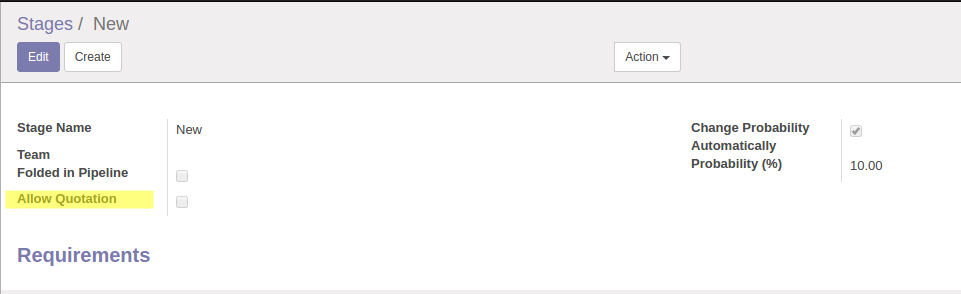
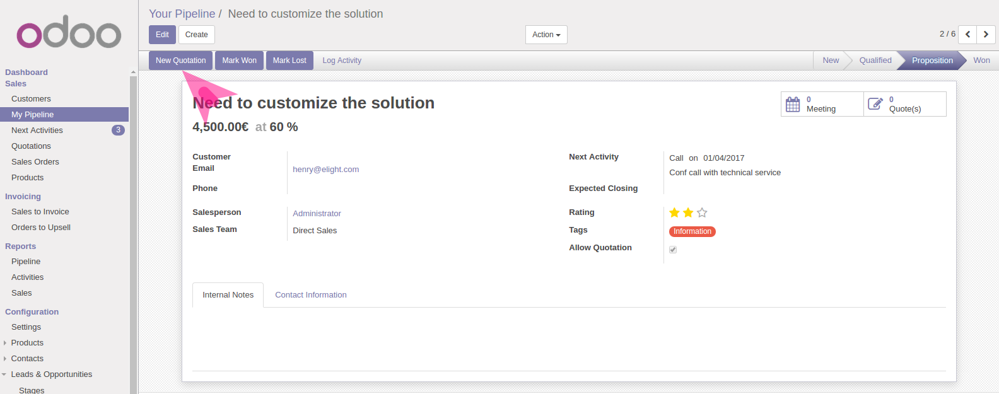
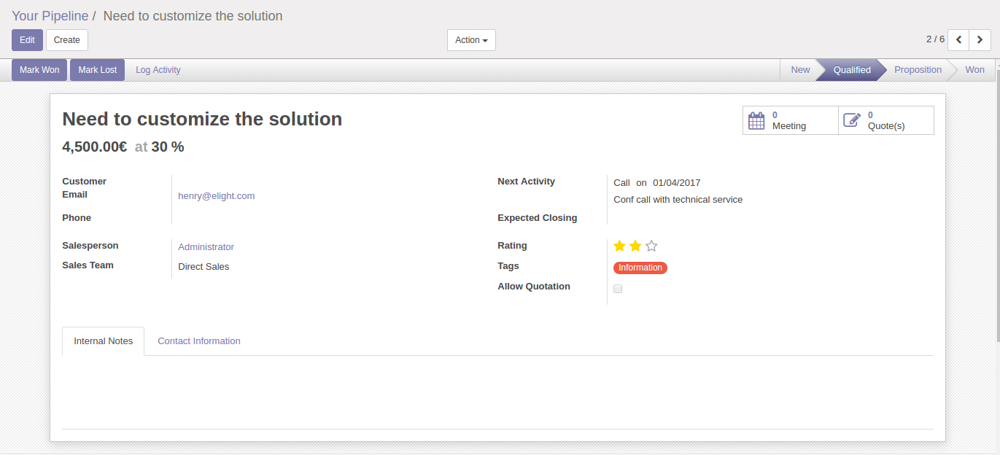

In your Odoo web interface, under the Sale section, Sales & Opportunities menu is there. Select a crm stage to block quotation create
Select the desired crm state and check the "Allow Quotation" field.

In the others states the create quotation button is not visible.
